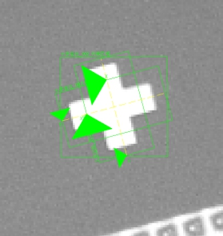
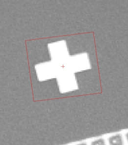

十字定位工具能够在实时图像中进行一个到多个实时十字形状与训练模式之间的匹配，并计算出实时十字形状的中心点坐标，同时计算精细的线性变换与角度信息。工具的训练界面如图1(a)，其中仿射矩形卡尺为训练区域，其中有两个查找双边缘的找线卡尺。在训练时，调整训练区域包含图像中的十字形状（尽量保持区域中心与十字中心重合），当开启“显示找线卡尺”参数时，注意到两个横纵找线卡尺会跟随训练区域并自动调整角度宽度及位置，此时执行训练即可。执行定位的结果如图1(b)所示。
 
| 分类 | 参数名称 | 参数描述 |
|---|---|---|
| 属性窗口 | 接受阈值 | 训练模板与实时搜索结果之间有一个匹配程度的分数，当匹配分数高于接受阈值时表明实时搜索成功。接受阈值的取值范围是(0,1)。 |
| 角度低/高 | 搜索的角度范围，最低角度>=-180°，最高角度<=180°，最低角度<最高角度。 | |
| 缩放低/高 | 搜索时的缩放范围，取值范围(0, +∞），且缩放低应小于等于缩放高。 | |
| 搜索个数 | 设置最多的搜索结果个数。 | |
| 是否全图搜索 | 开启全图搜索的开关。当选择“是”时，整幅实时采集的图像都是该工具的搜索范围；当选择“否”时，Edit视图中的“搜索区域”仿射矩形是该工具的搜索范围。搜索区域要大于训练区域。 | |
| 搜索区域 | 显示实时图像上参与搜索的仿射矩形区域。与属性窗口中关闭“全图搜索”后出现的“搜索区域”是同一个参数。 | |
| 显示找线卡尺 | 是否在界面显示找线卡尺 | |
| 图像窗口 | 训练区域 | 显示模板图像中参与训练的仿射矩形区域。与属性窗口中的“训练区域”是同一个参数。 |
| 横/纵找线卡尺 | 横/纵两找线卡尺，只在“显示找线卡尺”参数为是时显示 | |
| 搜索区域 | 显示实时图像上参与搜索的仿射矩形区域。与属性窗口中关闭“全图搜索”后出现的“搜索区域”是同一个参数。 | |
| 数据链 | 输入图像 | 用来实时搜索的图像。 |
| 高级界面 | 获取训练图像 | 获取训练所需要的图像 |
| 执行模式训练 | 针对获得的训练图像进行十字模板训练 | |
| 输入图像 | 获取训练图像时从参数链的输入图像获取 | |
| 加载图像 | 获取训练图像时从外部文件路径加载图像 | |
| 保存训练图像 | 保存工程时，是否保存训练图像 | |
| Mark类型 | 白色Mark：表示十字为白色，背景为暗色；黑色Mark：表示十字为黑色，背景为亮色；忽略：任意 | |
| 自动颗粒度 | 是否由算法自动确定颗粒度。选择否则在高级界面窗口显示颗粒度与精细颗粒度参数。 | |
| 颗粒度 | 描述模式的边界点的数量。颗粒度越大，速度越快，精度越低；颗粒度越小，速度越慢，精度越高 。 | |
| 精细颗粒度 | 同颗粒度，比颗粒度精细，一般精细颗粒度的值要小于颗粒度。取值范围[1,颗粒度)，支持小数，只有在自动颗粒度为否的时候，显示此参数。 | |
| 自动噪声阈值 | 是否由算法自动确定噪声阈值。选择否，则在高级界面窗口显示噪声阈值参数。 | |
| 噪声阈值 | 在图像中，像素值低于噪声阈值的部分被认为是噪声，不参与模板训练；像素值高于噪声阈值的部分被认为是图像特征，参与模板训练。一般按默认值即可。取值范围[1,255]，支持小数。只有在自动噪声阈值为否的时候，显示此属性 | |
| 自动边缘强度 | 是否由算法自动确定边缘强度。选择否则在高级界面窗口显示边缘强度参数。 | |
| 边缘强度阈值 | 模式中所有边界点的幅值的总和。一般按默认值即可。与属性界面中的“边缘强度”是一个参数 | |
| 训练区域 | 模板图像中参与训练的仿射矩形区域。 | |
| 搜索个数 | 用户期待搜索的目标个数，设置为正整数 | |
| 接受阈值 | 训练模板与实时搜索结果之间有一个匹配程度的分数，当匹配分数高于接受阈值时表明实时搜索成功。接受阈值的取值范围是(0,1)。同属性界面的“接受阈值”参数。 | |
| 全图搜索 | 当选择“是”时，整个实时的采样图片都是该工具的搜索范围；当选择“否”时，“搜索区域”视图中的仿射矩形是该工具的搜索范围。搜索区域要大于训练区域。同属性界面中的“开启全图搜索”参数。 | |
| 角度低/高 | 根据定位目标的旋转范围来确定起始角度、终止角度。角度范围越大，速度越慢；角度范围越小，速度越快。一般按默认值360度即可。同属性界面的“角度低/高”属性。 | |
| 缩放低/高 | 根据定位目标的缩放范围来确定起始缩放、终止缩放。缩放范围越大，速度越慢；缩放范围越小，速度越快。取值范围(0, +∞)。同属性界面中的“缩放低/高”参数。 | |
| 十字对比度阈值 | 同找线工具的对比度阈值，按照边缘信号的强度来评分，输出边缘最强的点。对比度阈值的取值范围是0~255。同属性界面中的“十字对比度阈值”参数。 | |
| 执行搜索 | 在已经训练的前提之下，执行一次搜索任务。 |
| 分类 | 参数名称 | 参数描述 |
|---|---|---|
| 监视窗口 | 输入图像 | 输入图像宽度、高度、像素大小。 |
| 结果个数 | 搜索结果个数。 | |
| 搜索结果 | 搜索结果组成的数组。 | |
| 执行结果 | 工具执行结果。 | |
| 执行时间 | 工具执行时间。 | |
| 图像窗口 | 搜索位置 | 模板中的搜索区域在实时搜索图像上的区域范围。 |
| 搜索坐标 | 十字中心定位实时搜索结果 | |
| 执行结果 | 显示工具执行结果，执行成功显示“OK”，执行失败显示“NG”，同监视窗口的执行结果参数。 | |
| 数据链 | 搜索结果 | 所有满足预设条件的结果信息，包含十字中心坐标、二维线性变换、分数、相对/绝对角度和匹配区域，单个搜索结果可作为十字定位结果解析工具的数据链输入。同监视窗口中的“搜索结果数组”参数。 |
| 搜索坐标 | 十字中心定位实时搜索结果。 | |
| 搜索位置 | 模板中的搜索区域在实时搜索图像上的区域范围。 |
无
如果有多个十字定位结果，可以通过数组解析工具，数据类型选择“scCrossSearchResult”，来获取定位结果的搜索结果数组中的某个搜索结果，再使用十字定位结果解析工具进行解析。如果在应用中，视野中可能定位出多个十字目标，使用数组解析工具和十字定位结果解析工具，配合循环就可以遍历显示定位结果。
由于训练时对训练区域中的十字进行了自动角度检测，因而不对训练区域的角度做过多要求，但在训练时，应尽量保证训练区域中心与十字中心重合。
可通过开启“显示找线卡尺”参数来实时查看当前训练中的找线工具位置，若位置不合理可做微调。
参见“\Samples\十字定位工具.gvp”。